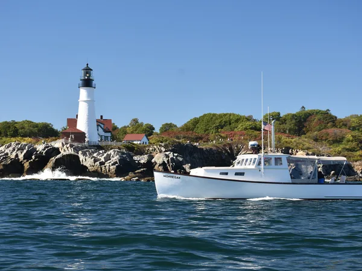
The Coast
Rugged cliffs, hidden coves, and open ocean — Casco Bay is one of the most scenic bays on the entire East Coast. Golden hour out here is something else.
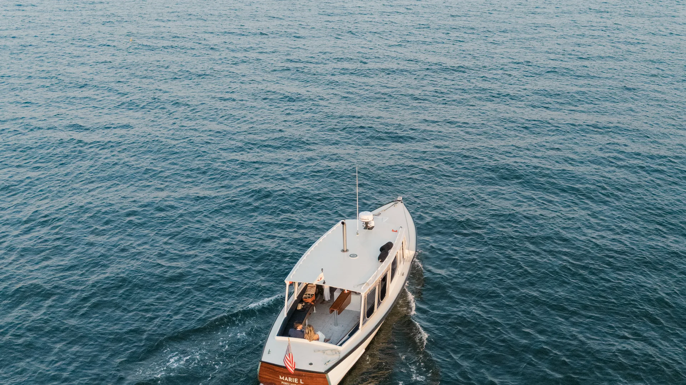
Portland, Maine
Private boat cruises on Casco Bay, James Beard–nominated catering, sunset charters, and coastal adventures built for the bride and her crew.
Why Maine?
Skip Vegas. Skip Nashville. Maine offers something rare — genuine beauty, world-class food, and private experiences you can't find anywhere else.

Rugged cliffs, hidden coves, and open ocean — Casco Bay is one of the most scenic bays on the entire East Coast. Golden hour out here is something else.
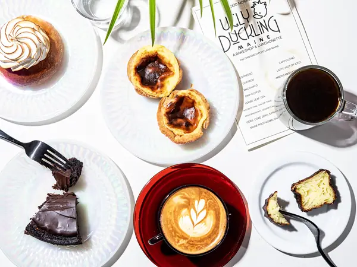
Add catering from Chaval and The Ugly Duckling — Portland's James Beard–nominated chefs — to any charter. Lobster rolls, tapas, and handcrafted pastries, out on the water.

No crowds. No package tours. Our private charters mean the entire boat is yours — just the bride, her crew, and miles of open water.
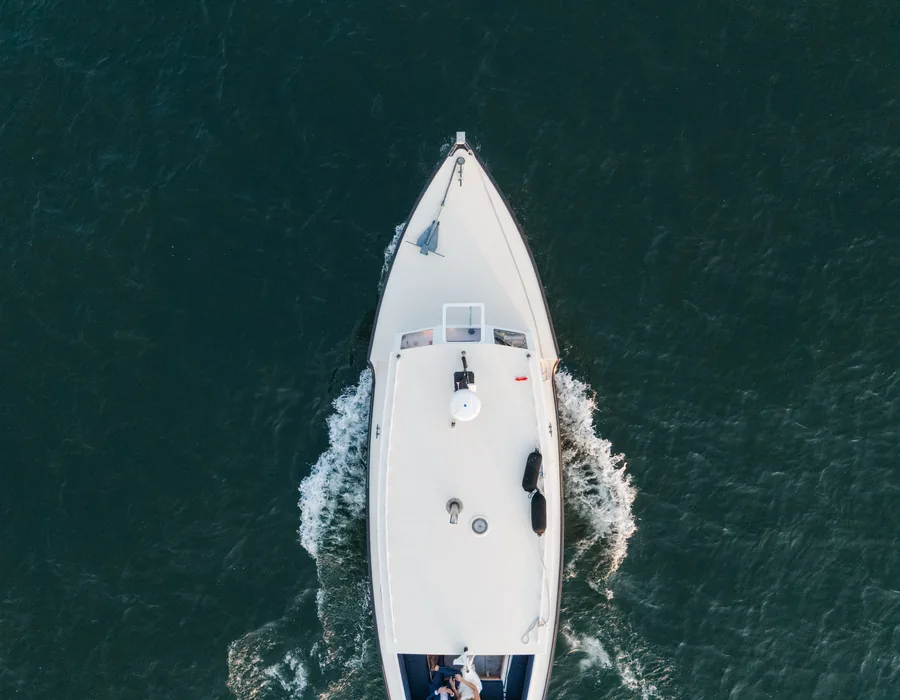
Featured Experience
Board a classic wooden vessel and spend the afternoon or evening sailing the islands of Casco Bay. We handle everything — you just show up and celebrate.
On the Water
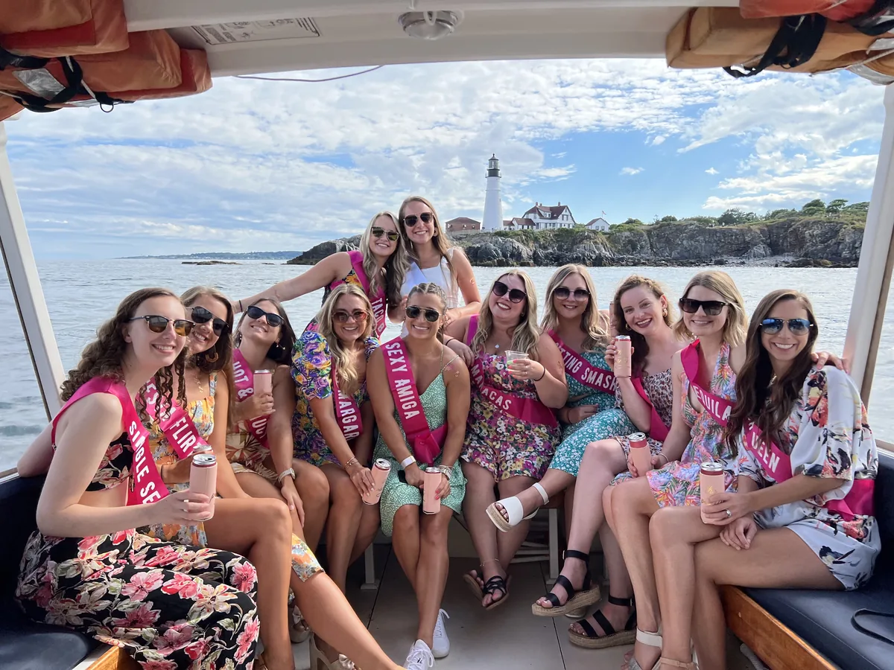
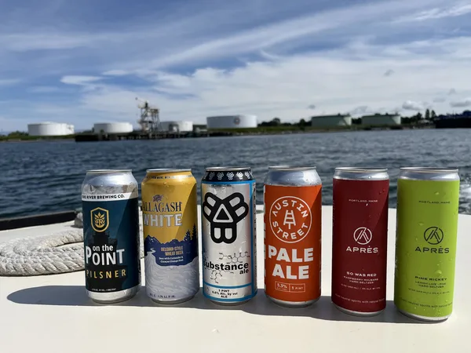
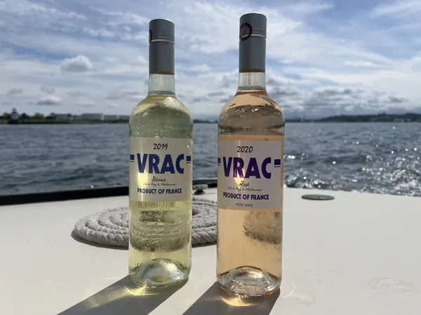
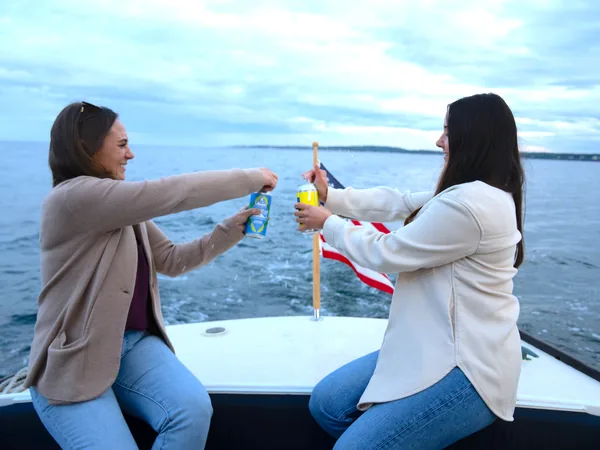
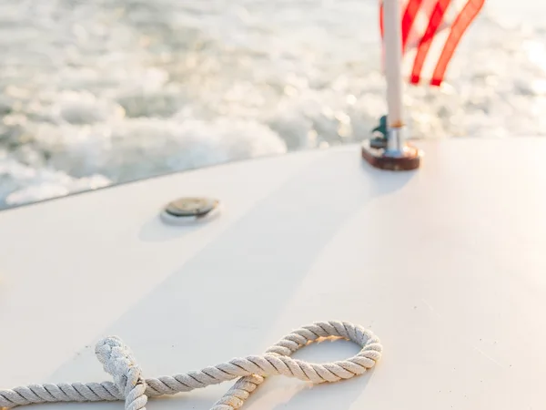
Plan Your Trip
Everything you need to plan the perfect Maine bachelorette weekend — from itineraries to packing lists to insider tips.
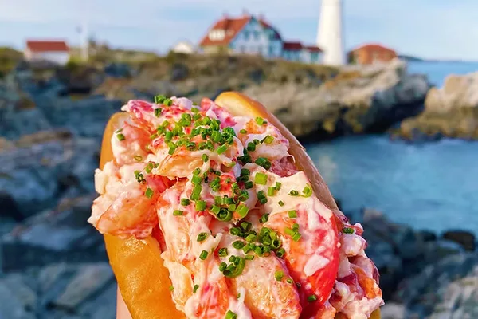
Weekend Itinerary
Friday night through Sunday morning — bars, brunch, the boat cruise, and everything in between. Your complete 3-day itinerary.
Read the Guide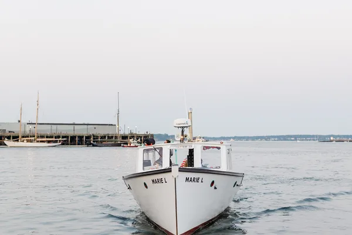
Boat Cruise
First time chartering a boat? Here's everything — what to wear, what to bring, how it works, and why it's the best bachelorette activity in Maine.
Learn More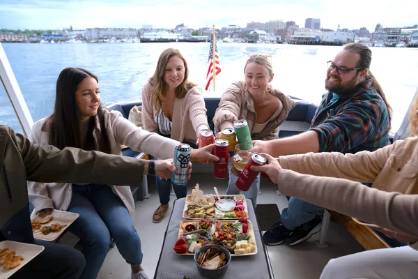
Unique Experiences
Sunrise kayaking, private island picnics, coastal hikes, and world-class dining on the water — Maine has bachelorette activities you won't find anywhere else.
See ActivitiesFive Stars
"We did a bachelorette group of 12 girls and we had a fantastic time! Drinks were delicious and ride was very smooth with beautiful landscapes. We would do this again in a heartbeat!"
"I booked a charter for a friend's bachelorette party and it was the highlight of everyone's trip! The boat was very comfortable and the experience was seamless."
"Vinny and Tristan were the best! They shared so many fun facts about Portland and always made sure our glasses were full. We even saw some really cute seals."